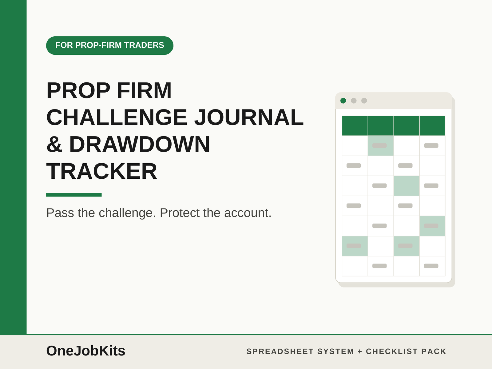

OneJobKits · Kit #1
Prop-Firm Challenge Journal & Drawdown Guardian — prop firm challenge tracker

If you searched for a prop firm challenge tracker, you already know where challenges are actually lost: rarely on strategy, usually on one bad day — one session where the daily loss limit or the max drawdown gets touched and the account is gone. What decides that day is not a signal. It is whether you knew, in dollars, exactly how much room you had left.
This is a drawdown tracker and journal built for exactly that record. This page gives you the first sheet free, right here: a one-page limit tracker that shows your distance to both limits in $ and %. Below it is the full system it comes from — your firm's rules recorded once, every trade and every day logged, and a Drawdown Guardian dashboard that keeps your room visible before every session. It is a journal and an organiser only: no signals, no trade ideas, no predictions, and no financial advice, and it connects to no broker or firm.
Free download — start with the One-Page Limit Tracker
The Drawdown Guardian — One-Page Limit Tracker is a single-sheet mini workbook: enter your daily loss limit and your max drawdown, log the day's balance, and it shows your distance-to-limit in dollars and in percent. There is also a free Drawdown Room Calculator on this hub that works the same two limits from your starting balance.
Download the free one-page limit tracker (Excel)Get it on Gumroad instead
What the tracker does not do: it watches one number per day. The full journal below keeps the whole challenge — every trade behind the balance, every mistake priced in R, every week reviewed — which is the record you need when you review yourself, and the evidence you need if a firm ever disputes your account.
What's inside the full kit
- The workbook (Excel + Google Sheets) — 9 tabs in one linked record system; no macros, no connection to any broker or firm
- SETUP — Firm Rules — your numbers, typed once: account size, starting balance, daily loss limit, max drawdown limit, profit target, minimum trading days, and drawdown type (static or trailing), copied from your firm's rules as they stood when you started
- TRADE LOG — room for 500 trades: instrument, setup, R-multiple, risk in dollars, screenshot link, and a mistake tag on every trade
- DAILY LOG — one row per day: day P&L, closing balance, trades taken, notes — the dated balance record everything else reads from
- DRAWDOWN GUARDIAN — the pre-session check: current balance, peak balance, drawdown from peak, room left before the max-drawdown breach, today's loss used, room left before the daily-loss breach, and progress to your profit target — each in dollars and as a percent of the limit used, with warning flags at 50% and 75%
- ANALYTICS — win rate, profit factor, expectancy, average R, max drawdown and an equity curve, broken down by setup, instrument and session: a summary of your own record, not a prediction
- MISTAKE TRACKER — your mistakes ranked by how much R they actually cost you, so the expensive ones get fixed first
- WEEKLY REVIEW — a simple 10-minute weekly review routine, built into the workbook
- PHASE TRACKER — Phase 1, Phase 2, and a funded payout log: dates, amounts and requests, recorded as they happen
- Worked example file — the same workbook filled in with 40 example trades and a filled daily log, so you can see exactly how every tab is used before you log a real one
- Checklist pack (PDF, 24 pages) — printable pre-session checklist, tilt & risk checklist, challenge-day checklist and a weekly-review worksheet
- Pro ($69) adds: the ACCOUNTS tab — more than one challenge or funded account kept in the same workbook, each against its own recorded rules
A filled example — so you can see the finished thing
The kit ships with the workbook already filled in for one fictional challenge account, so the record's shape is visible before your first real entry. Every number below is from that sample file, and the file is marked EXAMPLE:
| From the example file | The sample record |
|---|---|
| The rules as recorded (SETUP) | Account $100,000 · starting balance $100,000 · daily loss limit $3,000 · max drawdown $8,000, static · profit target $10,000 · minimum 5 trading days |
| Day 3 of the daily log | −$500 day, closing balance $99,650. The Guardian reads: drawdown from the $100,250 peak = $600, which is 7.5% of the max drawdown allowed; the day used $500 of the $3,000 daily limit (16.7%) |
| The log by mid-September | Entries run 1–17 Sep 2026, wins and losses both on the page — including two −$750 days; the balance line crosses the recorded $10,000 target line on 11 Sep at $110,150, and the last shown entry closes at $116,800 |
| What the example is — and is not | It is a sample record showing how the sheets fill in. It is not a trading result, not a testimonial, and not a promise about yours: your log will show your trading, whatever that is |
That is the shape of the whole system: the rules written down before the first trade, the balances logged while they are boring, and the room-to-limit visible on the one page you check before every session.
Who it is for
Traders in a prop-firm evaluation, traders running a funded account, and traders about to buy a challenge who want their firm's rules, their daily room and their evidence in one file they control — in Excel or Google Sheets.
Who it is not for
Anyone looking for signals, trade ideas, strategy, coaching on passing a challenge, or financial advice of any kind. There is none in here — on purpose. This kit records your trading; it does not direct it.
Free reading from the hub: How do you track drawdown in a prop firm challenge?, Daily limit or total limit? and What records to keep for a prop firm payout dispute.
Questions buyers ask
- Do you size from the daily limit or the total one?
- That decision is yours and your firm's rules — this journal gives no sizing advice. What it does is keep both numbers in front of you: the Drawdown Guardian reads your daily log and shows room left before the daily loss breach and room left before the max drawdown breach, in dollars and in percent of each limit used, so neither limit ever surprises you.
- Is the floor static, intraday trailing, or EOD trailing — and does open P&L count?
- It depends entirely on your firm, which is why the setup tab makes you write it down: drawdown type (static or trailing), daily loss limit, max drawdown, profit target and minimum trading days — copied from your firm's own rules page on day one, before your first trade. The journal records the balances you enter against the rules you recorded; your firm's definition always governs.
- What if my firm changes the rules overnight, or disputes a payout?
- Then your records are your only evidence. That is why the kit is built as an evidence folder as much as a journal: the rules as they stood when you bought the challenge, a dated daily-balance log, every trade logged, and a payout log in the phase tracker. Traders who keep dated records from day one hold proof; traders who start keeping them the day something goes wrong hold a story.
- Traders break rules they never understood — how does a journal help?
- By putting your rules on one page, in your numbers, where you see them before every session — instead of in a PDF you read once at signup. The included checklist pack adds a pre-session checklist, a challenge-day checklist and a tilt & risk checklist you can print, so the rules are checked, not remembered.
- Does it connect to my broker or firm, or place trades?
- No. It is a spreadsheet journal and organiser. It has no signals, no trade ideas, no predictions and no financial advice, and it connects to nothing — you type in your own numbers, and they stay in your file.
- Which firms and account sizes does it work with?
- Any of them, because the numbers are yours: you enter your account size, starting balance, daily loss limit, max drawdown (static or trailing), profit target and minimum trading days once, and every dashboard in the workbook reads from your setup. If your firm changes its rules, you update one tab — and the dated change itself is part of your record.
- What does the free one-page tracker cover, and what does the full journal add?
- The free tracker is one sheet: your two limits in, the day's balance logged, your distance-to-limit in $ and % out. The full journal adds the whole challenge record around it — the 500-row trade log, the daily log, the analytics, the mistake tracker ranked by R cost, the weekly review page, the phase tracker with its payout log, and the 24-page printable checklist pack.
Prices
Standard: $39 · Pro: $69 — one-time payment, digital download. No subscription; the files are yours.
Can't find the kit you need?
We build it. Ask us — first asker gets it at half the shelf price. Tell us the job at onejobkits.com and we will build the kit for it.
Related kits
Please know: this is a journal and organiser only — not financial advice, not a trading system, and no substitute for your firm's own rules, which always govern your account. It has no signals, no trade ideas and no predictions, and it does not connect to any broker or firm. All example data is fictional (the sample account, its trades and its balances are invented, and every page of the example file says EXAMPLE).